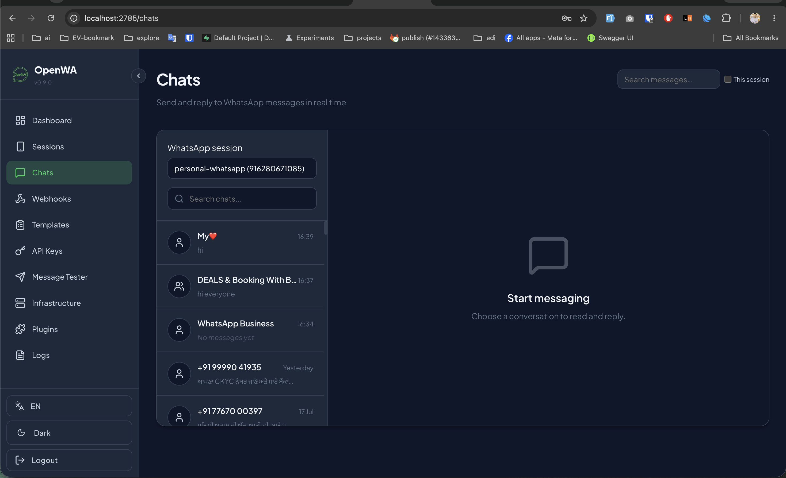
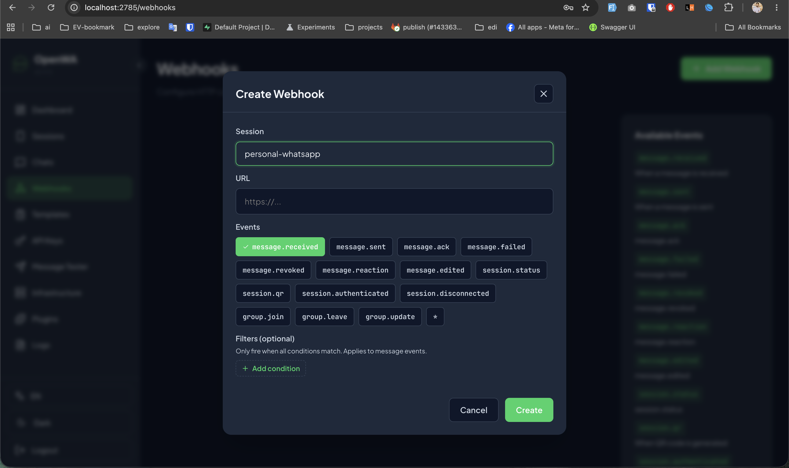
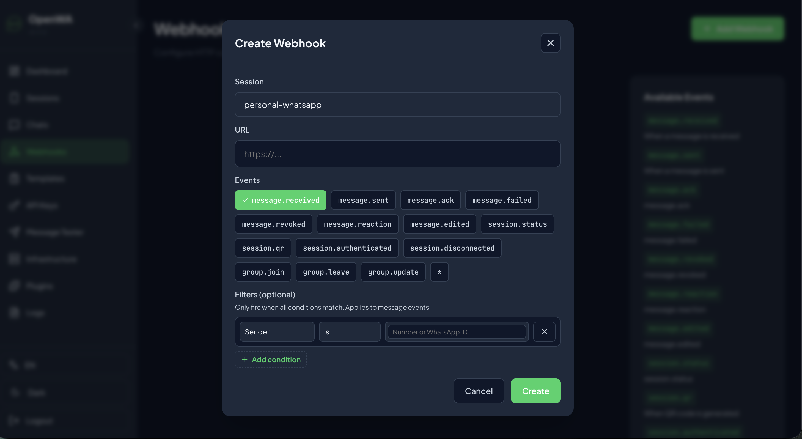
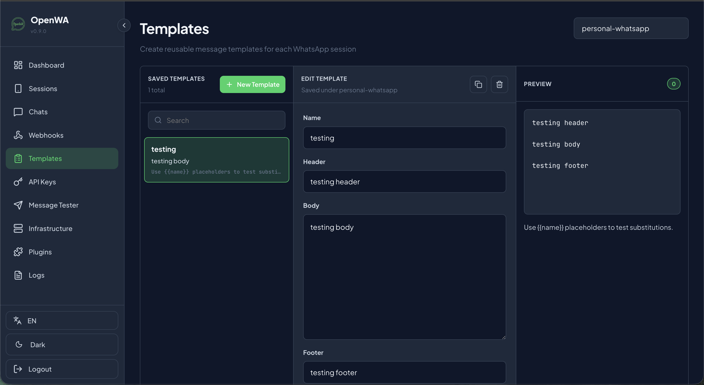
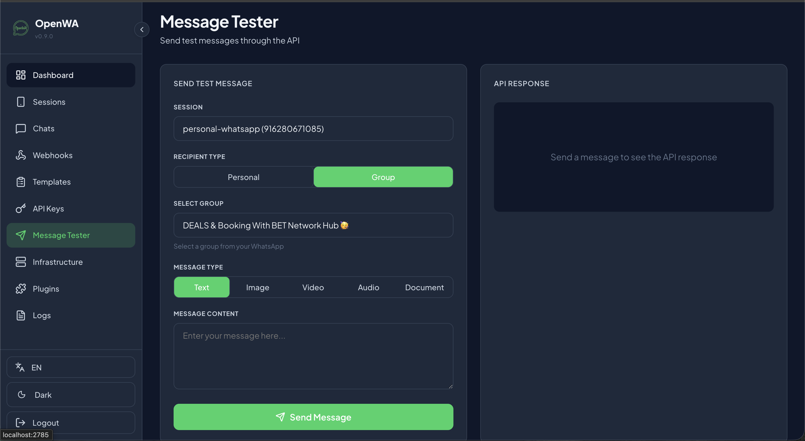
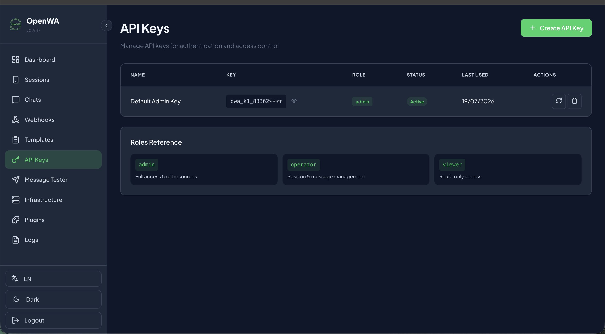
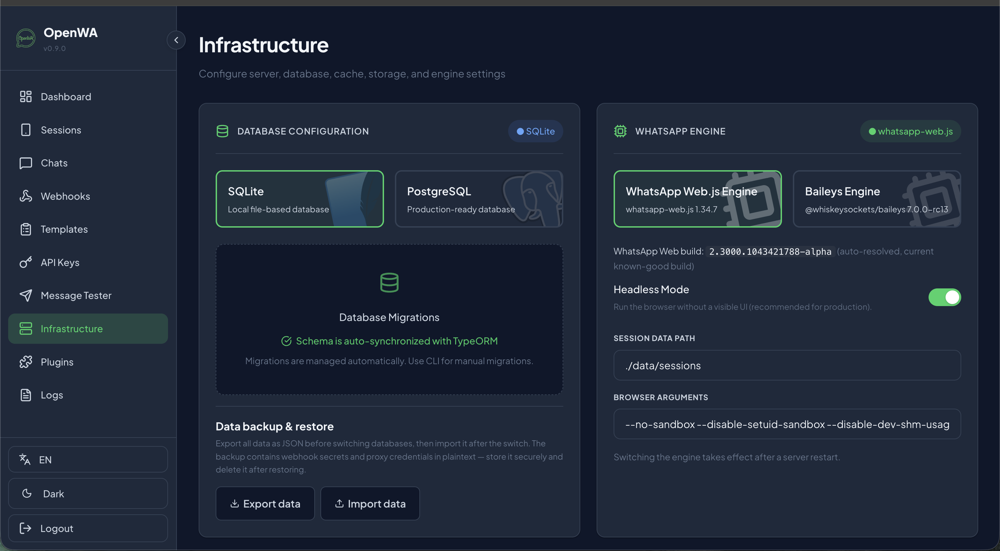
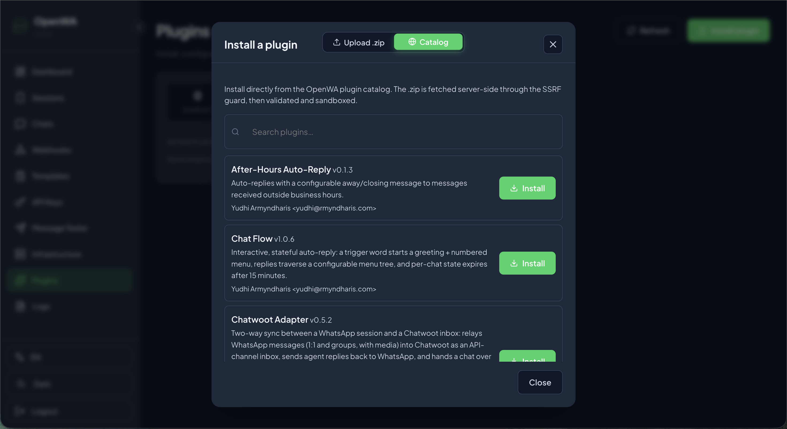
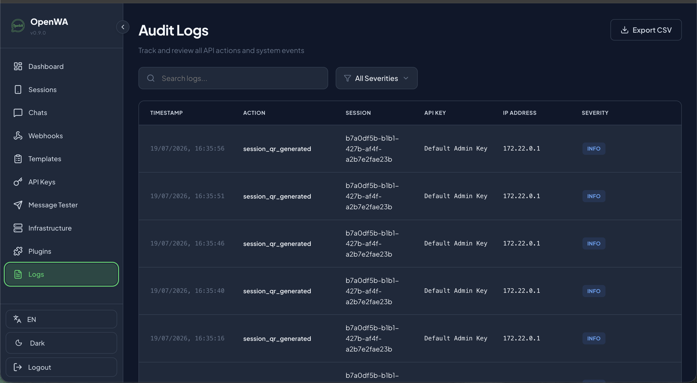

Integrating WhatsApp into your business applications often feels like a choice between two bad options: paying Meta exorbitant per-message charges for the official WhatsApp Cloud API, or wrestling with fragile, custom-built browser automation scripts that break every time WhatsApp Web updates.
If you've been searching for a middle ground, you've likely come across OpenWA. It is a free, open-source, self-hosted WhatsApp API Gateway. Rather than paying for Meta verified business accounts, OpenWA turns standard WhatsApp accounts into programmable HTTP gateways using Web automation engines.
Even better, OpenWA features a modular plugin architecture (OpenWA-plugins) that allows developers to extend the server's functionality with custom logic without modifying the core gateway codebase. Let's take a deep dive into the dashboard, plugin development, and crucial deployment FAQs.
The Architectural Concept:
WhatsApp App (on Mobile/Web) → OpenWA Server (via Baileys / Puppeteer) → OpenWA Plugin System / Webhooks → Your Backend CRM / AI Service
OpenWA comes with a beautifully designed, sleek dark-themed administrative dashboard that runs locally (typically on port 2785). Let's review the key sections based on active system setups.
Under the Chats menu, administrators can see all ongoing threads for active WhatsApp sessions. It functions as a lightweight web chat client inside your gateway dashboard.
OpenWA Chats interface displaying active dialogs for the 'personal-whatsapp' session.
Webhooks are the backbone of event-driven integration. Whenever a WhatsApp event triggers (e.g. message received, message sent, qr generated, group update), OpenWA delivers a POST payload to your specified URL. You can also define granular matching filters (e.g., matching a specific Sender ID or group filter) to optimize network payloads.


Left: Creating an event webhook trigger. Right: Applying conditions based on the sender ID.
To standardize auto-replies, OpenWA provides a dedicated **Templates** system. You can define dynamic templates featuring dynamic double-brace placeholders like {{name}} to build custom, formatted body copy, headers, and footers.

Creating structured message templates with placeholders.
OpenWA embeds a developer utility under Message Tester. It allows you to simulate requests directly from the web interface, testing plain text, media attachments (images, video, audio), or PDF document payloads to single recipients or target group sessions before writing scripts.

The message testing interface for rapid debugging.
API keys prevent unauthorized access to your WhatsApp server. You can provision multiple API tokens with different roles:

OpenWA supports database migrations with SQLite (for small setups) or PostgreSQL (for heavy multi-session deployments). On the engine level, developers can switch between:

The system records audit events such as session_qr_generated to track administrative events. Plugins can be loaded directly from the OpenWA plugin catalog (e.g. Chatwoot sync, after-hours responders) or uploaded as a simple .zip package.


Instead of building a separate microservice listening to webhooks, you can write native plugins in TypeScript or JavaScript. Plugins execute inside the OpenWA sandbox, which has direct, low-latency access to the underlying engine.
Below is the boilerplate layout of a basic plugin directory:
my-custom-plugin/
├── plugin.json # Plugin manifest
└── index.js # Core plugin logic
Here is an example structure of the plugin.json file:
{
"name": "Auto-AI Responder",
"version": "1.0.0",
"description": "Relays user queries to ChatGPT and auto-replies on WhatsApp",
"author": "VitableTech",
"permissions": [
"chats:read",
"messages:send"
]
}And here is the corresponding index.js event listener:
module.exports = async function initPlugin(api) {
// Subscribe to incoming message events
api.on('message', async (message) => {
// Ignore group chats or outgoing messages
if (message.isGroup || message.fromMe) return;
if (message.body.toLowerCase() === '!ping') {
await api.sendMessage(message.from, 'Pong! OpenWA Plugin is fully active.');
}
// Relay other customer messages to your CRM API
});
};You do not need a Meta verification token, a business approval, or Facebook developer accounts. OpenWA leverages standard WhatsApp Web connection layers. By scanning the QR code inside the OpenWA dashboard, you can connect any personal or business WhatsApp number directly, bypassing Meta's Cloud API limits and registration flows.
Yes, absolutely. Since OpenWA simulates browser sessions (unlike Meta's official API), WhatsApp's spam detection algorithm monitors activity closely. If a personal number suddenly sends hundreds of automated or unsolicited bulk messages in a short duration, WhatsApp will detect it as bot activity and **permanently suspend/ban the phone number**.
To mitigate the risk of suspension:
Yes, OpenWA is designed to be hosted on your own infrastructure (VPS, AWS, or local server). Running the WhatsApp Web.js engine requires a server with Chromium dependencies. The Baileys engine is much lighter and is ideal for deployment on lightweight Docker environments.
Yes. Since OpenWA uses WhatsApp Multi-Device session logic, the primary mobile device must remain registered and active. However, once paired, the server communicates independently, meaning your phone doesn't need to be constantly online, though keeping it off for long periods might log out the session.
Building automated messaging systems, webhook handlers, or AI chatbot agents is a powerful way to engage users and scale support. VitableTech has extensive experience building custom self-hosted gateways, ensuring low-latency communication while keeping compliance risks minimized.
Contact VitableTech Today